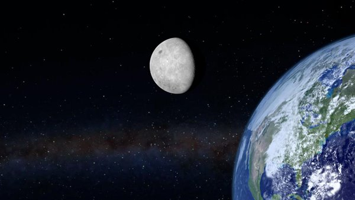

지구로부터 멀어지는 달

달이 지구의 자전 에너지를 조금씩 훔쳐가 해마다 자신의 공전 궤도를 3.8cm씩 높여가고
있는 중인데, 이는 곧 매년 3.8cm씩 지구로부터 멀어져 가고 있음을 뜻한다.
1년에 3.8cm씩 10억 년 동안 쌓이면 달까지 거리의 10분의 1인 3만 8.000km가
멀어지는 것인데, 이렇게 되면 목성이 달을 끌어가 버릴지도 모른다고 예측하는
천문학자들도 다수 있다.
확실한 것은 달이 지구를 떠나면 지구 생명체는 거의 멸종된다는 것이다.